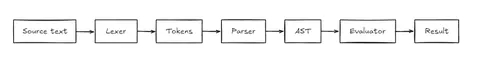

From Tokens to Trees
By Sukalyan RoyPublished Updated 8 min read

We’ve all used so many programming languages over the years. Who makes them? And how are they maintained? Was the Compiler Design class in university a complete waste of time? Let’s find out.
This project was inspired by a YouTube tutorial I came across. While I followed along with the tutorial, I also made several tweaks and improvements.
In this blog post, I'll walk you through the development process, sharing insights, reflections, and the questions I grappled with along the way. I'll also discuss potential improvements and future extensions of the interpreter.
By the end, we’ll have a small expression interpreter with variables, arithmetic, booleans, and a clearer mental model of how programming languages move from text to execution.
TL;DR #
-
This post builds a tiny interpreter to understand what happens between source code and execution.
-
The pipeline goes from raw text to tokens, then a syntax tree, then evaluation.
-
The implementation supports arithmetic, variables, booleans, and basic expression handling.
-
The goal is not to build a production language. It is to make compiler-design ideas less abstract.
Project status
This interpreter is a learning project based on a tutorial, with my own modifications and explanations added while building. It currently covers the core interpreter pipeline. Better errors, functions, scopes, and a cleaner grammar would be natural next steps.
Getting Started: The Big Picture #

Before diving into code, it's essential to have a clear mental model of what we're building. An interpreter typically consists of three main components:
-
Lexer (Tokenizer): Breaks down the input text into a sequence of tokens.
-
Parser: Analyzes the sequence of tokens to understand the grammatical structure.
-
Interpreter: Executes the parsed code, performing computations and managing state.
Understanding each component's role helps prevent getting lost in abstractions, especially when dealing with multiple classes and methods.
Note: One general insight I had is that it's easy to get lost within abstractions. With classes for everything and different methods, it's crucial to keep a clear mental model of what each class and method does.
The Lexer: Breaking Down the Input #
The lexer converts raw input text into meaningful tokens. Tokens are the basic building blocks that the parser will use to understand the code's structure.
Tokenizing Numbers #
Handling numbers, including integers and floating-point values, was one of the initial challenges. The lexer reads characters sequentially, recognizing digits and decimal points to form complete numbers.
def tokenize_number(self):
num = ""
is_float = False
while (self.char in self.digits or self.char == ".") and self.idx < len(self.text):
if self.char == ".":
is_float = True
num += self.char
self.move()
return Float(num) if is_float else Integer(num)Why do we need separate functions in the interpreter to convert each data type from string back into their original types? #
Initially, I had separate functions like read_INT, read_FLOAT, and read_VAR to convert string representations back into their original types. This was necessary because when tokens are created, their values are stored as strings. However, having multiple functions becomes cumbersome and can be refactored for efficiency.
One potential improvement is to modify the token classes to store values in their appropriate types upon creation. This way, we can eliminate the need for separate conversion functions in the interpreter, simplifying the code.
Handling Identifiers and Keywords #
Variables and keywords are composed of letters. The lexer needs to distinguish between them by:
-
Collecting consecutive letters to form words.
-
Checking if the word matches any predefined keywords (like make for variable declarations).
-
Treating it as an identifier (variable name) if it's not a keyword.
def extract_word(self):
word = ""
while self.char in self.letters and self.idx < len(self.text):
word += self.char
self.move()
if word in self.declaration_keywords:
return Declaration(word)
elif word in self.boolean_literals:
return Boolean(word)
else:
return Variable(word)The Parser: Structuring the Tokens #
With a stream of tokens from the lexer, the parser's job is to understand the grammatical structure by building an abstract syntax tree (AST).
An AST is a tree representation of the program’s structure. For arithmetic expressions, many nodes happen to be binary because operators like + and * have a left and right operand.
Defining the Grammar #
Our grammar reflects the standard order of operations (operator precedence):
-
Boolean_expression: Handles logical operators (AND, OR, NOT).
-
Comp_expression: Handles comparison operators (<, >, ==, !=, <=, >=).
-
Expression: Handles addition and subtraction (+, -).
-
Term: Handles multiplication and division (*, /).
-
Factor: Handles numbers and parenthesized expressions.
Why was the grammar defined in this particular way? #
The grammar is designed to enforce operator precedence in arithmetic expressions. By structuring the grammar hierarchically, we ensure that multiplication and division are performed before addition and subtraction, and that expressions within parentheses are evaluated first. This simplifies parsing by handling each level of precedence separately and allows for recursive parsing of nested expressions.
Example from parser.py illustrating the factor method:
def factor(self):
if self.token.type == "INT" or self.token.type == "FLOAT":
return self.token
elif self.token.value == "(":
self.move()
expression = self.expression()
return expression
elif self.token.type.startswith("VAR"):
return self.token
elif self.token.value in self.unary_operators:
operation = self.token
self.move()
operand = self.factor()
return [operation, operand]Why does a simple change like that in the factor method make brackets work? #
By returning the expression when encountering an opening parenthesis, we're treating the entire parenthesized expression as a single factor. This means that in higher-level methods (term and expression), the parenthesized expression is considered one unit, maintaining the correct order of operations. If we didn't do this, the parser would treat parentheses as separate tokens, leading to incorrect evaluation.
Recursive Descent Parsing #
We use recursive functions for each grammar rule to build the AST. This method, known as recursive descent parsing, makes it easier to extend the grammar and understand the parsing logic.
Example from parser.py illustrating the term method:
def term(self):
node = self.factor()
while self.token.value == "*" or self.token.value == "/":
op = self.token
self.move()
right_node = self.factor()
node = [node, op, right_node]
return nodeThe Interpreter: Evaluating the AST #
With the AST, the interpreter evaluates expressions and manages variables.
Evaluating Expressions #
For binary operations, the interpreter recursively evaluates the left and right subtrees before applying the operator.
Example from interpreter.py illustrating the evaluate method:
def evaluate(self, left, op, right):
left_value = self.interpret(left)
right_value = self.interpret(right)
if op.value == "+":
result = left_value + right_value
elif op.value == "-":
result = left_value - right_value
# Additional operators...
return Integer(result) if isinstance(result, int) else Float(result)Why does directly returning the output not work, and you have to return your predefined class object? #
The interpreter's methods expect operands to be objects with specific attributes (like type and value). If we return primitive data types like integers or floats directly, these attributes are missing, leading to errors. By returning instances of our predefined token classes (e.g., Integer, Float), we maintain a consistent structure that the interpreter can work with, allowing it to handle different data types uniformly.
Managing Variables and Assignments #
Handling variable assignments and reassignments was challenging initially. Variables need to store their evaluated values, not just references.
Handling Variable Reassignment #
When assigning one variable to another (e.g., make x = y), the interpreter stored the token representing y instead of its value. This led to incorrect behavior when reassigning variables.
Solution:
Modify the interpreter to evaluate the right-hand side before assignment.
def evaluate(self, left, op, right):
if op.value == "=":
evaluated_right = self.interpret(right)
self.data.write(left.value, evaluated_right)
return evaluated_right
else:
# Handle other operations
passNow, variables store the actual values, making reassignment work correctly.
Example:
shadowscript: make x = 50
Result: 50
shadowscript: make y = x + 50
Result: 100
shadowscript: make x = y
Result: 100Why in the Token class file are we returning everything typecast as a string? #
Typecasting everything as a string in the Token classes ensures that tokens can be compared and processed consistently. This is important for attributes like type, which could represent various data types (INT, FLOAT, VAR). Representing the type as a string simplifies comparisons and method calls based on token types, especially when using functions like getattr.
Token types are usually strings or enums because they describe categories like INT, FLOAT, or VAR. Token values, however, do not always need to be strings. Numbers can often be stored as int or float immediately during lexing.
Challenges and Solutions #
Why Does the Code Break for Inputs Like 5 + (-5)? #
The problem was that the unary method was returning primitive numeric values instead of Token objects. As a result, when the evaluate method expected tokens with type and value attributes, it received a primitive value, leading to an AttributeError.
Modify the unary method to return Token objects after applying the unary operator.
def unary(self, operator, operand):
operand = self.interpret(operand)
operand_value = getattr(self, f"read_{operand.type}")(operand.value)
if operator.value == "-":
result_value = -operand_value
else:
result_value = operand_value
return Integer(result_value) if isinstance(result_value, int) else Float(result_value)Handling Unresolved Variables #
Accessing the type attribute of an undefined variable caused errors.
To fix this, Add a check in the read_VAR method to ensure the variable exists before accessing its attributes.
def read_VAR(self, id):
variable = self.data.read(id)
if variable is None:
raise Exception(f"Undefined variable '{id}'")
variable_type = variable.type
return getattr(self, f"read_{variable_type}")(variable.value)Understanding the Grammar Design #
Why was the grammar structured with separate levels for Expression, Term, and Factor? #
This structure enforces operator precedence, ensuring that multiplication and division are computed before addition and subtraction, and that expressions within parentheses are evaluated first. By handling each level separately, the parser can correctly interpret complex expressions and maintain the correct order of operations.
Lessons Learned and Reflections #
-
Maintaining a Clear Mental Model: It's crucial to keep track of each component's purpose, especially when working with multiple classes and methods.
-
Consistent Data Structures: Working consistently with Token objects prevented type-related errors and made the code easier to debug.
-
Effective Error Handling: Adding checks and informative error messages helped in diagnosing issues quickly.
-
Incremental Testing: Testing each component individually ensured that new features worked as intended and helped catch bugs early.
-
Documenting Questions and Answers: Writing down my questions and the answers I found aided my understanding and will serve as a valuable reference for future projects.
Potential Improvements (for the followup post) #
-
Refactor Data Type Conversions:
Issue: Currently, we have separate functions in the interpreter to convert each data type from string back into their original types.
Improvement: Modify the token classes to store values in their appropriate data types upon creation. This eliminates the need for separate conversion functions and simplifies the interpreter code.
-
Add More Stopwords to Lexer:
Improvement: Enhance the lexer's ability to handle whitespace and other non-essential characters, improving its accuracy in tokenizing input.
-
Add Functionality for Strings:
Improvement: Extend the lexer and parser to handle string literals, enabling string manipulation within the interpreter.
-
Implement More Operators:
Improvement: Add boolean literals and operators like increment (
++) and decrement (--), taking care to handle pre and post-conditions appropriately. -
Write Class-Specific Tests:
Improvement: Develop comprehensive tests for each component (lexer, parser, interpreter) to ensure reliability and ease future development.
-
Ensure Correct Variable Reassignment:
Goal: Make sure that sequences like make x = 50, make y = x + 50, make x = y result in x having the value 100.
-
Implement Control Structures:
Improvement: Complete the implementation of conditional statements (
if, else) and loops (while) as introduced in the tutorial. -
Add Advanced Control Structures:
Improvement: Incorporate additional loops like for, do-while and conditional structures like switch-case to enhance the interpreter's capabilities.
-
Function Definitions and Calls:
Improvement: Add functionality to define and call functions, enabling code reuse and modularization.
-
Explore Advanced Runtime Improvements:
Add a bytecode VM, profiling tools, property-based tests, and REPL debugging hooks.
Final Thoughts #
Building a simple interpreter from scratch was both challenging and rewarding. It deepened my understanding of how programming languages work and reinforced the importance of thoughtful design and clear documentation. I'm excited about the potential improvements and features I plan to add.
The complete github repo will be posted alongside Part 2 of this post.
I encourage anyone interested in language design or compilers to embark on a similar journey. Not only does it demystify the process, but it also opens up new possibilities for creating your own languages and tools.
If you have only used programming languages from the outside, try building even a toy interpreter once.
Also, if you have worked on a similar project, i'd appreciate any suggestions you might have for Part 2.
References:
Thank you for reading! If you have any questions or suggestions, feel free to reach out or leave a comment below. (or DM me if the comment section is not working)